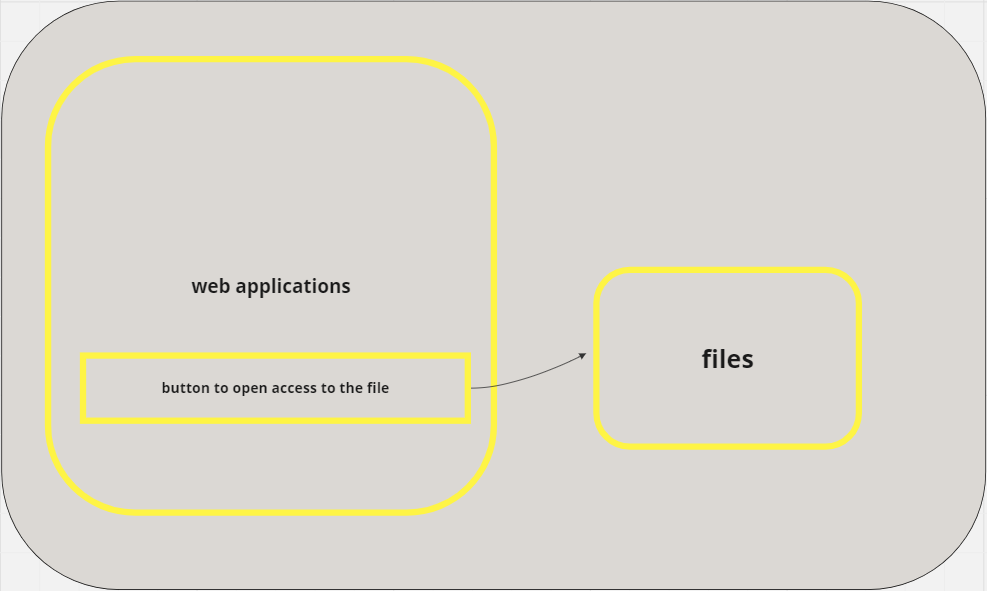
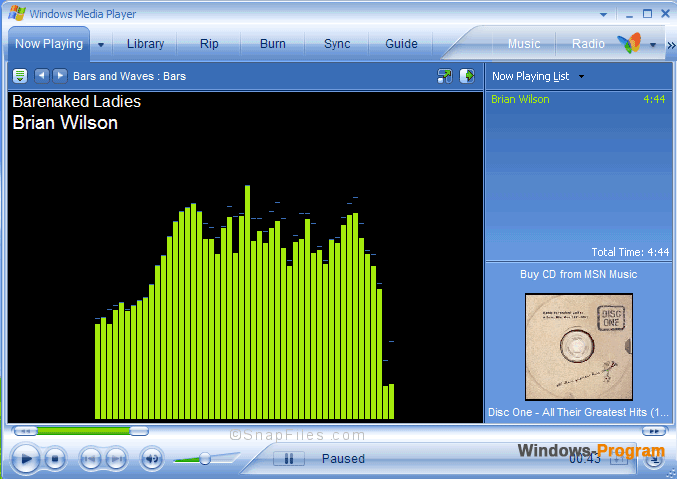
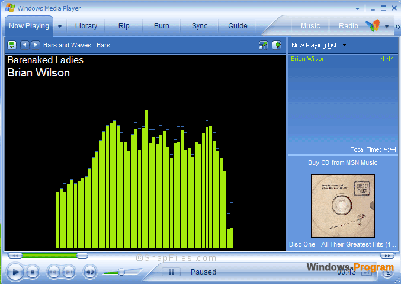
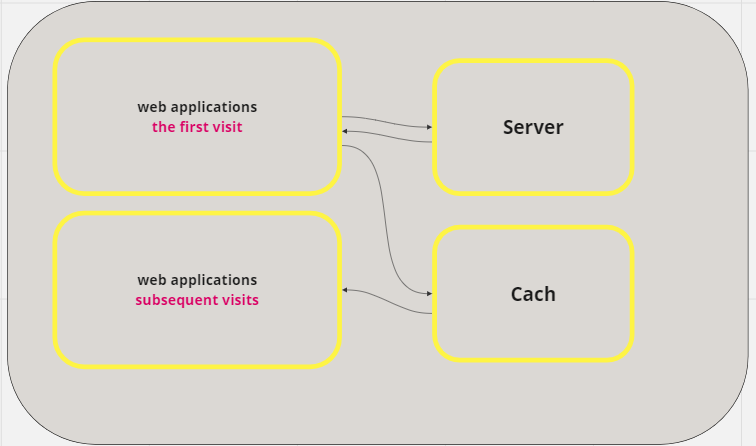
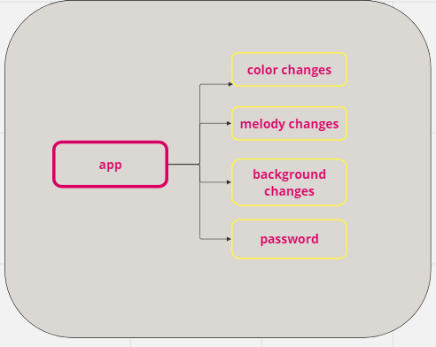

What is the Filesystem API?
Implements various features
- Offline applications
- Data Caching
- Working with settings and configurations
- File and document management
Offline applications
- Readers and news apps
- Maps and navigation
- Messengers and email clients
- Tasks and organizers
- Media Players
- Educational Apps
- Games
 

Data Caching
- Images
- Scripts and styles

Working with settings and configurations
- User Interface Settings
- Configuration of notifications and alerts
- Local data storage
- Security and Privacy Settings
- Integration with external services

File and document management
Filesystem API Basics
Creation
const fs = require('fs');
const path = require('path');
// Creating a directory
const directoryPath = path.join(__dirname, 'myDirectory');
fs.mkdir(directoryPath, { recursive: true }, (err) => {
if (err) {
console.error('Error creating the directory:', err);
return;
}
console.log('The directory was created successfully.');
});
Filesystem API Basics
Creation
const fs = require('fs');
const path = require('path');
// Creating a file
const filePath = path.join(directoryPath, 'myFile.txt');
const fileContent = 'Hello, world!';
fs.writeFile(filePath, fileContent, (err) => {
if (err) {
console.error('Error creating the file:', err);
return;
}
console.log('The file was created successfully.');
});
Filesystem API Basics
Reading
const fs = require('fs');
const path = require('path');
const filePath = path.join(__dirname, 'text.txt');
const readStream = fs.ReadStream(filePath, { encoding: 'utf8' });
// processes each piece of data (chunk) and outputs it to the console without adding a new line.
readStream.on('data', (chunk) => {
console.log(chunk);
});
//notifies that the file has been read.
readStream.on('end', () => {
console.log('File reading completed.');
});
// handles an error when reading a file.
readStream.on('error', (err) => {
console.error('Error reading the file:', err);
});
Filesystem API Basics
Record
const fs = require('fs');
const path = require('path');
const bytext = 'Goodbye! The recording is completed.';
const filePath = path.join('02-write-file', 'text.txt');
const writeStream = fs.createWriteStream(filePath);
const promptText = 'Enter the text (enter "exit" to complete): ';
// process.stdout It is an output stream to the console.
// write(promptText) used to write text to this output stream.
process.stdout.write(promptText);
process.stdin.setEncoding('utf8');
process.stdin.on('data', (input) => {
// removing spaces from both ends
input = input.trim();
if (input.toLowerCase() === 'exit') {
console.log(bytext);
process.exit();
}
writeStream.write(input + '\n');
process.stdout.write(promptText);
});
process.on('SIGINT', () => {
console.log(`\n${bytext}`);
process.exit();
});
Filesystem API Basics
Removal
// Deleting files from folder that are no longer in src
const folderFile = await fs.readdir(folder);
await Promise.all(
folderFile.map(async (file) => {
const srcPath = path.join(src, file);
const folderPath = path.join(folder, file);
// If the file does not exist in src, it deletes
try {
await fs.access(srcPath);
} catch (err) {
await fs.unlink(folderPath);
}
}),
);
Security and Privacy
Restricting access and permissions
Data encryption
Error handling and notifications
Conclusion
The Filesystem API provides powerful capabilities for working with the user's file system, but requires attention to security and compatibility.